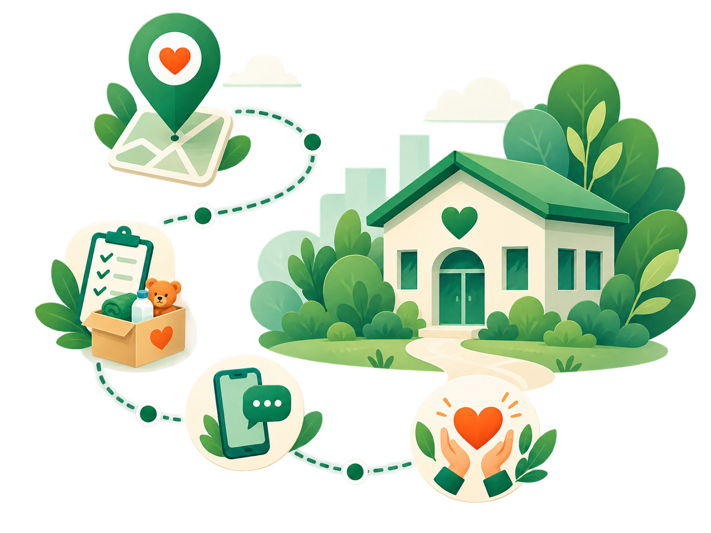

01
Encontre sua região
Escolha sua cidade para visualizar apenas instituições cadastradas naquela região.
Encontrar uma forma de ajudar pode ser simples. O Bem-Feito reúne instituições, necessidades e formas de contato para aproximar quem quer contribuir de quem precisa de apoio.

Escolha sua cidade para visualizar apenas instituições cadastradas naquela região.
Veja as instituições disponíveis e conheça um pouco mais sobre o trabalho realizado por cada uma.
Consulte os itens e necessidades informados pelas próprias instituições para saber como sua ajuda pode ser mais útil.
Utilize os canais disponibilizados pela instituição para tirar dúvidas e combinar a melhor forma de contribuir.
Realize sua contribuição diretamente com a instituição e ajude a transformar solidariedade em ação.
O Bem-Feito não recebe pagamentos, dinheiro ou doações em nome das instituições. A plataforma organiza e disponibiliza informações para facilitar o contato entre quem deseja ajudar e as instituições cadastradas.
Veja as instituições disponíveis e descubra onde sua contribuição pode fazer a diferença.
Encontrar instituições